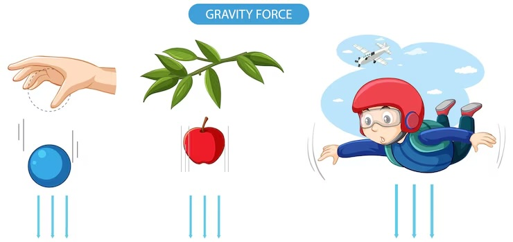
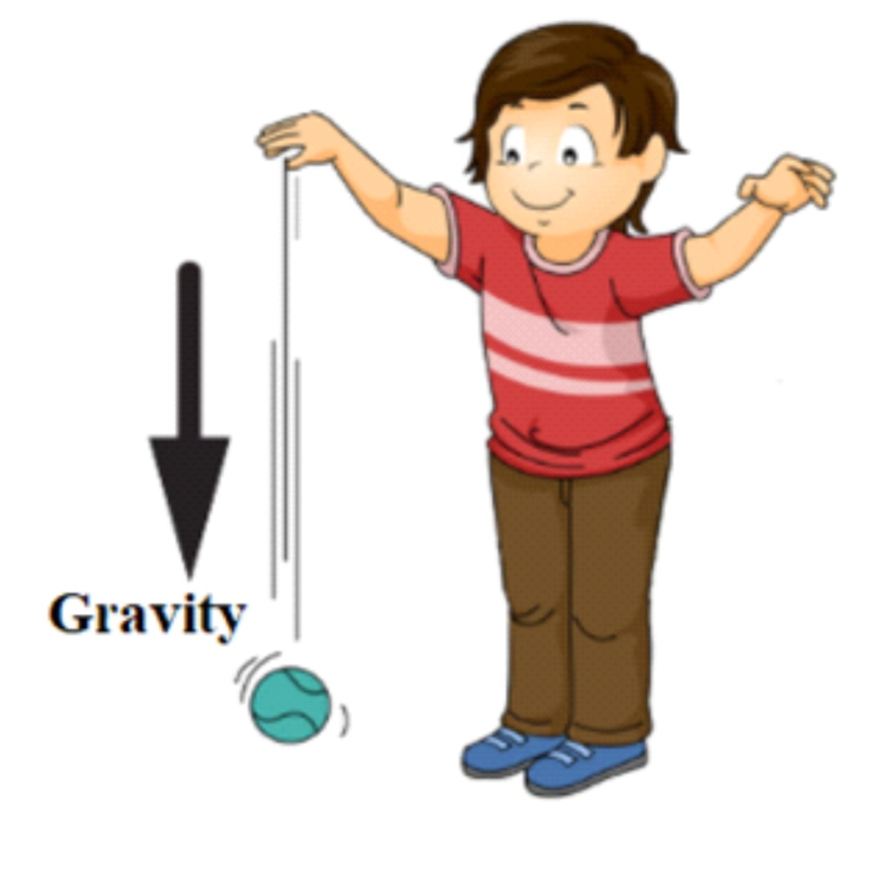
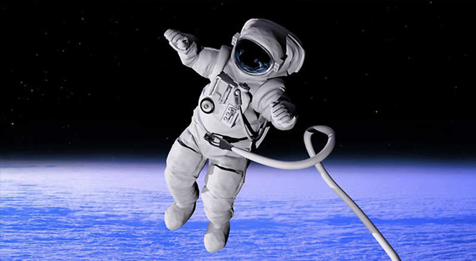

🌍 Understanding Gravity and Forces 🌍
What is Gravity?
Gravity is an invisible force that pulls everything down toward Earth's surface. You can't see gravity, but you can feel its effects everywhere around you!

Look at all these different objects falling! Gravity pulls them all toward the ground, no matter what they are made of or how much they weigh.
Important Vocabulary
- Force: A push or a pull that makes objects move. Forces can be strong or weak.
- Gravity: An invisible force that pulls everything down to Earth's surface.
- Weight: How heavy something is on Earth.
- Pull: Using a force to move things closer.
- Push: Using a force to move things away.
- Fall: To go in a direction towards the ground.
How Does Gravity Work?
Everything on Earth is affected by gravity - people, plants, animals, and objects. Gravity is what keeps everything in place and prevents us from floating away into space!

Watch what happens when this boy lets go of the ball! Gravity immediately pulls it down toward the ground. This simple demonstration shows how gravity works on everyday objects.
Real-Life Examples of Gravity
- When you drop a watermelon from a roof, it falls down to the ground
- A watermelon stays on a table because gravity pulls it down
- Going down a slide works because gravity pulls you downward
- Playing basketball requires gravity to bring the ball back down
- Skydiving is possible because gravity pulls skydivers toward Earth
Gravity Affects Everything - Heavy and Light!
One amazing thing about gravity is that it affects all objects equally, no matter how heavy or light they are!
Even something as light as a feather is pulled down by gravity! Notice how it falls toward the hand below.
Here we see multiple feathers all being pulled down by gravity. Despite being very light, they all fall in the same direction - down!
Heavy vs. Light Objects
If you drop both a heavy watermelon and a light ping pong ball from the same height at the same time, gravity will pull them both down to the ground. The force of gravity acts on everything!
- Heavy objects like watermelons, bricks, and jugs of juice fall down
- Light objects like feathers and ping pong balls also fall down
- No matter the weight, gravity still pulls everything toward Earth's surface
What Happens When You Throw Something Up?
Even when you throw an object upward, gravity is still working! Here's what happens:
Look at this juggling demonstration! Even though the balls are thrown upward, gravity pulls each one back down. This is why juggling works - gravity brings the balls back to where they can be caught!
The Journey of a Thrown Object
- You throw an egg up into the air
- Gravity immediately starts pulling it back down
- The egg slows down as it goes up
- Eventually, the egg stops moving upward
- Then gravity pulls it back down to the ground
Important: No matter how high you throw something, gravity will always bring it back down!
Gravity Works in All Directions
The force of gravity always pulls things down toward Earth's surface, no matter what direction you throw or push an object.
Testing Different Directions
- Throw a ball straight up - gravity pulls it down
- Throw a ball sideways - gravity still pulls it down
- Throw a ball at an angle - gravity brings it down to the ground
- Drop a ball straight down - gravity makes it fall faster
In every case, gravity pulls objects toward the ground, regardless of the initial direction!
What Would Happen Without Gravity?
Imagine if there was no gravity on Earth. Everything would be very different!

This astronaut is floating in space where there is very little gravity! Notice how they don't fall down like they would on Earth. Without gravity, people and objects just float around freely.
Life Without Gravity
Without gravity:
- People could just float away into space (like the astronaut in the picture above!)
- You wouldn't be able to run on the ground
- You couldn't lay in your bed
- Games like basketball would be impossible
- You couldn't go down a slide
- Skydiving wouldn't work
- Everything would float around instead of staying in place
- Your food and drinks would float away from your plate and cup
- Books wouldn't stay on shelves
The Story of a Famous Scientist
For hundreds of years, people didn't really think about why things fall down. Then a brilliant scientist made an important discovery!
This picture shows the famous story of how a scientist discovered gravity! When he saw an apple fall from a tree, it made him wonder: "Why does the apple fall down instead of floating up or sideways?"
The Apple and the Scientist
Legend tells us that a scientist was sitting under a tree when he saw an apple fall to the ground (just like in the picture above!). This made him start thinking: "Why did the apple fall down instead of floating away or going sideways?"
He realized that there must be an invisible force pulling the apple (and everything else) toward the ground. He called this force gravity!
This scientist's name was Isaac Newton, and his discovery helped us understand how gravity works. Thanks to his curiosity about a falling apple, we now understand one of the most important forces in our universe!
Understanding Balanced and Unbalanced Forces
Sometimes gravity works together with other forces. Let's learn about what happens when forces are balanced or unbalanced.
Balanced Forces
When forces are balanced, objects don't move or change their motion.
- A book sitting on a table: Gravity pulls it down, but the table pushes up with equal force
- A box being pushed with equal force from opposite directions stays still
- When forces are balanced, there is no change in motion
Unbalanced Forces
When forces are unbalanced, objects start moving or change their motion.
- Dropping a watermelon: Gravity is stronger than air resistance, so it falls
- Going down a slide: Gravity pulls you down faster than friction can stop you
- Pushing a box with more force from one side makes it move in that direction
- When one force is stronger than others, the object moves in that direction
How Gravity Affects Motion
Gravity plays a big role in how things move around us every day.
Objects at Rest vs. Objects in Motion
Objects at Rest:
- A ball sitting on the ground stays there because gravity pulls it down and the ground pushes up
- Objects stay on tables because gravity pulls them down while the table supports them
Objects in Motion:
- A ball rolling on the ground eventually stops, partly due to gravity and friction
- A child going down a slide speeds up because gravity is pulling them down
- Objects thrown through the air follow curved paths because gravity constantly pulls them downward
- Juggling balls (like in our earlier picture) follow predictable paths because gravity controls their motion
Comparing Different Scenarios
Think About These Situations:
Scenario 1: Two people push a box with equal force from opposite sides
Result: The box doesn't move because the forces are balanced.
Scenario 2: One person pushes a box harder than another person pushing from the opposite side
Result: The box moves in the direction of the stronger push because the forces are unbalanced.
Scenario 3: You drop a ping pong ball and a watermelon at the same time
Result: Both fall to the ground because gravity affects all objects, regardless of their weight.
Scenario 4: An astronaut drops a tool in space
Result: The tool floats away because there's no gravity to pull it down (like we saw in the space picture!).
Height and Gravity
Whether you drop something from a low height or a high height, gravity always pulls it in the same direction - straight down toward Earth's surface!
Dropping from Different Heights
- Drop a watermelon from 3 feet high - it falls straight down
- Drop a watermelon from a roof - it still falls straight down
- Drop a watermelon from an airplane - it will still be pulled down toward Earth
- The direction never changes, but objects dropped from higher places hit the ground with more force
Investigating Forces and Motion
Scientists study how forces affect motion by doing experiments and collecting data.
What Scientists Look For:
- How fast objects fall from different heights
- How different forces change an object's speed and direction
- What happens when multiple forces act on the same object
- How the strength of a push or pull affects motion
- Evidence that unbalanced forces cause changes in motion
- How gravity affects light objects (like feathers) versus heavy objects
- Why objects thrown upward always come back down
Key Concepts to Remember
Important Points About Gravity and Forces:
- Gravity is an invisible force that always pulls objects toward Earth's surface
- Gravity affects all objects equally, whether they are heavy (like watermelons) or light (like feathers)
- When you throw something up, gravity slows it down and pulls it back to the ground
- Gravity works regardless of the direction an object is moving
- Without gravity, everything would float away into space (like astronauts do!)
- Balanced forces don't change an object's motion
- Unbalanced forces cause objects to start moving or change their motion
- The direction of the strongest force determines which way an object will move
- Gravity helps us do everyday activities like going down slides and playing sports
- Isaac Newton discovered gravity by thinking about why apples fall from trees
Fun Challenge!
Next time you're outside, try dropping different objects (safely!) and watch how gravity affects them. Notice how everything falls straight down, no matter what it is. You're seeing the invisible force of gravity in action! Try dropping a feather and a heavier object - they might fall at different speeds due to air resistance, but gravity pulls on both of them!
You can also try gentle juggling with soft balls to see how gravity brings them back down to your hands, just like in our juggling picture!